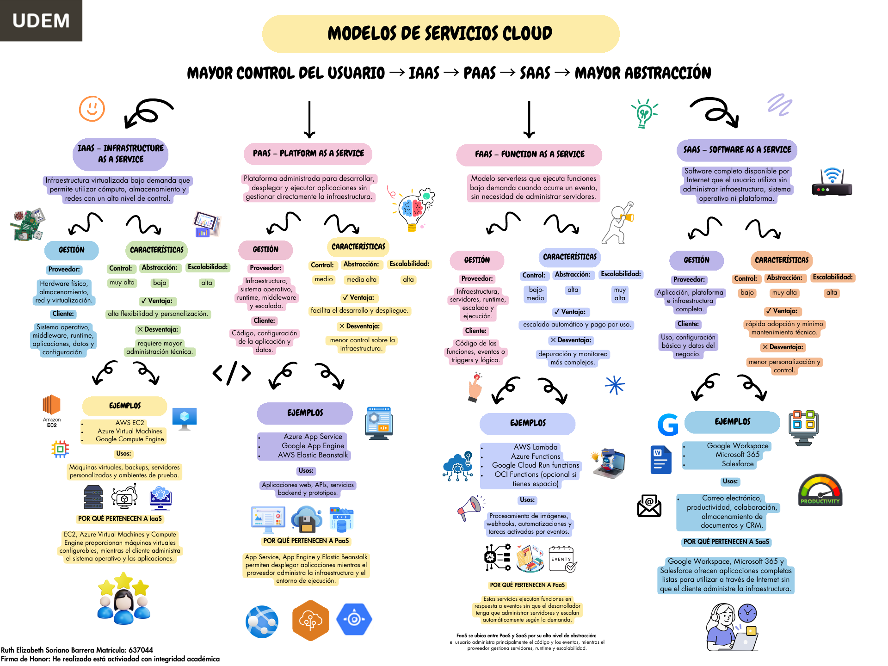

TRABAJO EN CASA #2
MAPA CONCEPTUAL
Modelos de Servicios Cloud
Comparación de modelos
El mapa compara IaaS, PaaS, FaaS y SaaS de acuerdo con el nivel de control del usuario y el grado de abstracción proporcionado por el proveedor. IaaS ofrece mayor control sobre los recursos virtuales, mientras que PaaS simplifica el desarrollo al administrar la infraestructura y el entorno de ejecución. SaaS ofrece aplicaciones completas listas para utilizar y presenta el mayor nivel de abstracción. FaaS se ubica entre PaaS y SaaS debido a que el usuario se concentra principalmente en el código y los eventos, mientras el proveedor administra los servidores, el runtime y el escalado automático.
Ver mapa original →